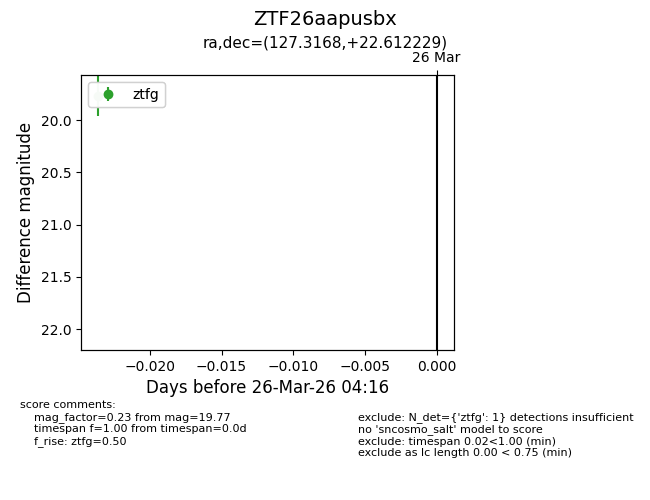
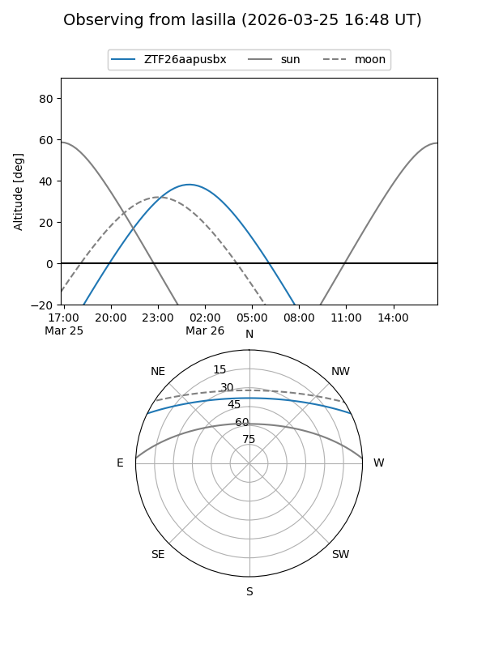
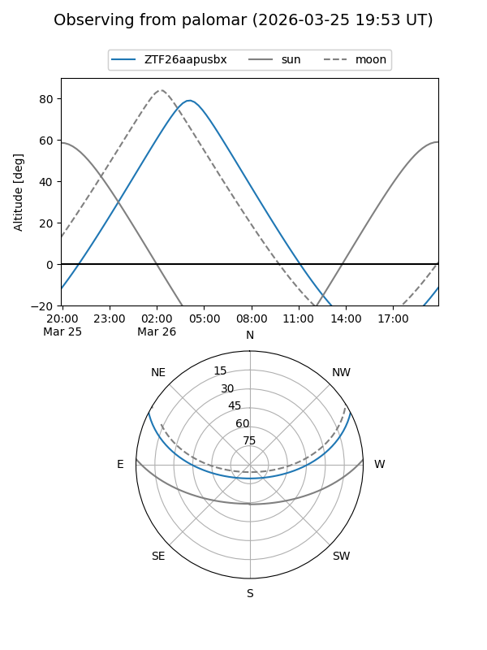

ZTF26aapusbx
Target ZTF26aapusbx at 2026-03-26 04:19
Aliases and brokers:
FINK: link
Lasair: link
ALeRCE: link
alt names
ZTF26aapusbx (ztf,fink_ztf)
Coordinates:
equatorial (ra, dec) = 127.3168,+22.61223
equatorial (HMS+DMS) = 08:29:16.04,+22:36:44.02
galactic (l, b) = (201.6310,+31.02865)
Flags:
Photometry:
last ztfg=19.77
1 ztfg detections
Lightcurve

Visibility


Additional plots